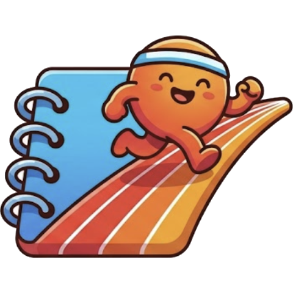

MarathonNote
마라톤 구간 시간 & 페이스 변환기 • 공식 칩 계측 시각 기반 • 랩 페이스 정밀 유추 & 양방향 타임 컨버터
1
Step 1. 러닝 기록 사진 입력
스마트칩 공식 기록 이미지 1건, 워치 1km 단위 구간기록 이미지를 첨부하세요. (최대 5장)
▾
등록된 러닝 기록 스크린샷 (0장)
업로드된 사진마다 [제거] 버튼을 눌러 개별 삭제할 수 있으며, 새 사진을 추가 등록할 수도 있습니다.
스마트칩 공식 기록 이미지 1건과 워치 1km 단위 구간기록 이미지를 첨부해 주세요. 사진은 최대 5장까지 등록할 수 있습니다.
2
Step 2. 기록 계산 · 타임테이블
출발 시각, 구간 변환기, 타임테이블
▾
공식 출발 시각 (Start Time of Day)
사진을 올리면 출발 시각이 예측됩니다 · 직접 수정 가능
총 거리 (Total Distance)
- km
총 완주 시간 (Finish Time)
-
평균 페이스 (Avg Pace)
- /km
시간 표시 안내:
✓ Time of Day (확실한 시간)
공식 계측 칩으로 측정된 확정 시각
~ 랩 페이스 유추
체크포인트 간 랩 페이스로 정밀 계산된 시각
달리기 시작한 지 xx분 ➔ 실제 시각
경과 시간 기준
분
통과 실제 시각 (Time of Day)
08:05:20
✓ 공식 계측
통과 지점 거리
5.00 km
구간 및 위치
5.0km 계측소 통과
구간 페이스
6'22" /km
남은 거리 및 시간
16.14 km / 117.3분 남음
실제 시각 ➔ 시작한 지 몇 분 후?
실제 시각 기준
달리기 시작한 지
63.4분 후
✓ 공식 계측 지점
경과 시간 상세
1시간 03분 26초
해당 시점 주행 거리
10.00 km
구간 정보
10.0km 계측소 통과
전체 코스 완주율
47.3 %
전체 구간별 타임테이블 (Time of Day & Lap Pace)
초록색 행은 Time of Day(공식 계측 시각)이며, 파란색 행은 랩 페이스로 정밀 유추된 시각입니다.
| 구간 / 지점 | 구간 거리 | 소요 시간 | 페이스 | 실제 시각 (Time of Day) | 누적 경과 시간 | 누적 거리 | 구분 |
|---|
3
Step 3. 유튜브 주로영상 입력
유튜브 링크로 내 모습을 찾고 클립을 다운로드합니다.
▾
유튜브 주로영상 내 모습 찾기 & 30초 클립 다운로드
영상 설명을 분석하여 촬영 지점과 촬영 시작 시각을 감지하고, 내 기록과 대조해 30초 클립을 다운로드합니다.
YouTube Analyzer
30s Clip Export